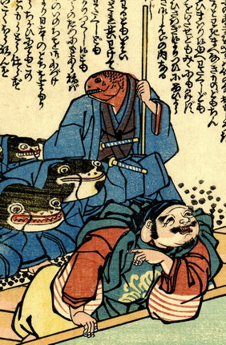

赤い魚が恵比寿天の後ろで、鯰たちを率いている。片手で棒を持ち、青い着物をまとって、腰に脇差しを差している。袖から伸びた腕は人間のものである。
出典：親書誌：U426_nichibunken_0157：恵比寿天申訳之記；エビステンモウシワケノキ／日付：2010／資源識別子：U426_nichibunken_0157_0001_0000
Copyright (c)2010- International Research Center for Japanese Studies, Kyoto, Japan. All rights reserved.